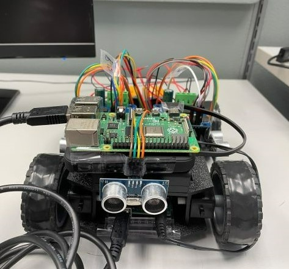

Oil Well Data Collection Website
Directly interacted with the primary stakeholder to ensure easy integration of user needs and an intuitive user interface. Built a company website with secure login, data input, and access to current and historical reports. Once the user enters data about a well, that information is emailed directly to those whom it is relevant to and integrated directly into the company's Snowflake database.

Temperature Collection Robot
Programmed and built an autonomous device that collected temperature data around an office and adjusted thermostats accordingly, interfacing Raspberry Pi and Arduino. See it on GitHub.